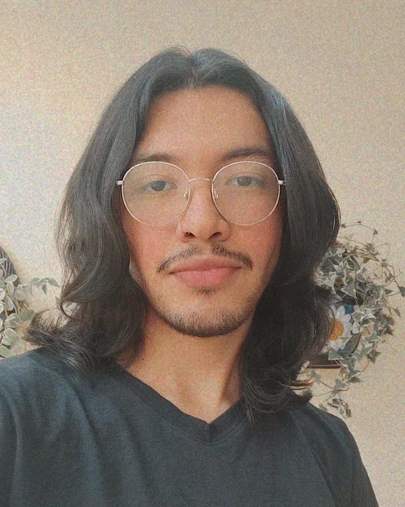

 Hola! soy Salvador, mis pronombres son Él/Elle/Élla. Estoy cursando el noveno semestre de diseño gráfico y soy ilustrador en mis tiempos libres. Tengo 24 años y soy originario de Córdoba Veracruz, soy fan de la cultura y música pop, las artes escénicas y los tacos árabes 😁 me considero una persona apasionada e intento siempre ser de mente abierta para conocer y experimentar cosas nuevas. Me gusta mucho el diseño de paginas web pero se me dificulta recordar los procesos y multiples codigos que hay, pero aun asi intento lo más que puedo para cursar con exito la materia. 🥳